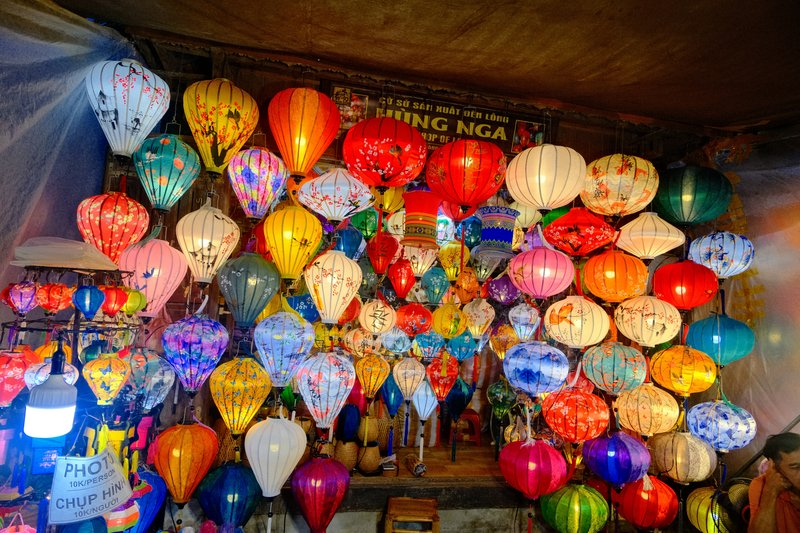
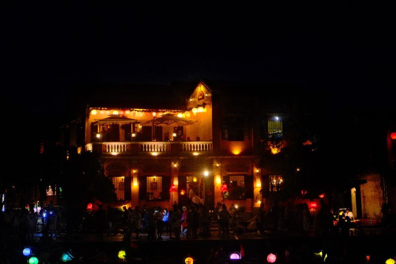

Landscape · Album 08 / 14
The old town at night, once the lanterns are on. Everything here was shot handheld at ISO 2000 to 8000.


 Next albumShanghaiShanghai & a water town nearby · July 2025 · 5 photos
Next albumShanghaiShanghai & a water town nearby · July 2025 · 5 photos
Want photos like these? DM me on Instagram or call 0490 324 875.